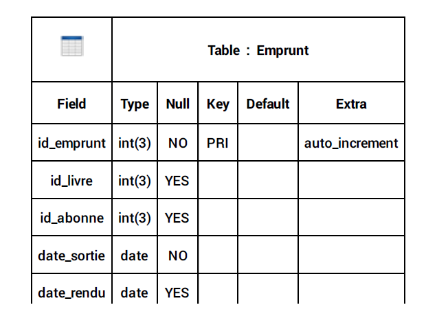

1- Les requêtes de base
- Créeer une BDD :
CREATE DATABASE IF NOT EXIST nomBdd - Supprimer une BDD :
DROP DATABASE IF EXISTS nomBdd - Observer la description d'une table :
DESC nomTable - Voir les BDD dans le serveur :
SHOW DATABASES - Rajouter un champs dans une table existance :
ALTER TABLE nom_de_table ADD nom_nouvelle_colonne VARCHAR(255) AFTER nom_colonne_existante
2- Tables et colonnes
- Créeer une BDD 'entreprise':
CREATE DATABASE IF NOT EXISTS entreprise - Creer une table dans la base de donnée entreprise :
CREATE TABLE IF NOT EXISTS employes ( id_employe INT(11) NOT NULL PRIMARY KEY AUTO_INCREMENT, prenom VARCHAR(20) NULL, nom VARCHAR(20) NULL, sexe ENUM ('f', 'm') NOT NULL, service VARCHAR(39) NULL, date_embauche DATE NULL, salaire FLOAT NULL ) - Insérer les donneées dans une table :
INSERT INTO employes (id_employe, prenom, nom, sexe, service, date_embauche, salaire) VALUES (381, 'Imane', 'NAJJAHI', 'f', 'comptabilité', '2023-06-18', 3000), (400, 'Spartak', 'SMBATYAN', 'm', 'informatique', '2022-05-30', 3200), (450, 'Semir', 'SARAJLIC', 'm', 'juridique', '2022-09-18', 5000), (510, 'Kaïss', 'BADI', 'm', 'contrôle', '2024-05-18', 2000), (550, 'Adama', 'CISSOKO', 'm', 'commercial', '2023-09-18', 2500), (600, 'Fabien', 'POTTIER', 'm', 'juridique', '2022-09-28', 5000), (700, 'Gary', 'MONTEIRO', 'm', 'informatique', '2022-05-28', 3300), (710, 'Axel', 'GRANSART', 'm', 'comptabilité', '2023-03-04', 5000), (810, 'Cleid', 'MANIGAT', 'm', 'contrôle', '2021-06-01', 2100), (910, 'Leïla', 'EMBARK', 'f', 'secretariat', '2023-06-16', 2000), (950, 'Maureene', 'MAROLANY', 'f', 'secretariat', '2021-06-01', 2000), (980, 'Océane', 'FOMEKOUONG', 'f', 'direction', '2023-06-16', 4000) ( 981, 'Venoth', 'RAJASEKARAN', 'm', 'commercial', '2022-10-15', 4000) -
Syntaxe alternative : ne permet pas d'insérer plusieurs séries de valeurs en une seule
requête, contrairement à la syntaxe de base (au dessus)
INSERT INTO employes SET id_employes = 900, prenom = 'Sahar', nom = 'FERCHICHI' sexe = 'f', service = 'direction', date_embauche = '2022-06-06', salaire = 7000 - Effacer une table :
DROP Table
3 - SELECT et DISTINCT
- Pour voir tout le contenu d'une table :
SELECT * FROM employes(* = tout = all) - Selectionner les valeurs de deux champs d'une table :
SELECT colonne1, colonne2 FROM nomtable
-> SELECT prenom, nom FROM employes : -> SELECT prenom, service, date_embauche FROM employes : - Afficher les données d'une table sans doublons : SELECT
DISTINCT colonne FROM nomTable
-> SELECT DISTINCT service FROM employes : - Effaçer un enregistrement : DELETE FROM nomTable WHERE
colonne =" "
-> DELETE FROM employes WHERE nom = 'Salimata'
Les requêtes ne sont pas sensibles à la casse mais une convention indique qu'il faut mettre les mots-clefs des requêtes en majuscules .C'est plus facile ainsi de s'y retrouver.
4 - Les opérateurs de comparaison
| Opérateur | Signification |
|---|---|
| = | Est égle à |
| > | Strictement supérieur à |
| < | Strictement inférieur à |
| >= | supérieur ou égale à |
| <= | Inférieur ou égale à |
| < > ou != | Est différent de |
5 - Creer un ALIAS avec AS
Nous creons un ALIAS pour renomer temporairement une colonne ou une table dans une requete. Cette astuce est particuliérement utile pour utiliser la lecture des requetes
- SELECT colonne1, colonne2, colonne3 FROM nomTable
-
-> SELECT nom, prenom AS firstName FROM employes -
-> SELECT nom, prenom, salaire*12 AS salaireAnnuel FROM employes
6 - Les conditions et les conditions multiples
Le mot clef WHERE (à condition que)
- Nous cherchons avec une condition une partie des données : :
SELECT colonne, colonne FROM table WHERE colonne = "donnée - Ici, nous cherchons à afficher les personnes dont le sex est masculin :
SELECT nom, prenom, sexe FROM employes WHERE sexe = 'm' - Trouver la personne qui gagne 7000
SELECT nom, prenom, salaire FROM employes WHERE salaire = 7000
Le mot clef WHERE (à condition que)
- Nous cherchons avec une condition une partie des données : :
SELECT colonne, colonne FROM table WHERE colonne = "donnée - Ici, nous cherchons à afficher les personnes dont le sex est masculin :
SELECT nom, prenom, sexe FROM table WHERE sexe = 'm'SELECT nom, prenom, sexe FROM employes WHERE sexe = 'm' - Trouver la personne qui gagne 7000
SELECT nom, prenom, salaire FROM employes WHERE salaire = 7000
6 - Les conditions et les conditions multiples
Le mot clef WHERE (à condition que)
- Nous cherchons avec une condition une partie des données:
SELECT colonne, colonne FROM table WHERE colonne = "donnée - Ici, nous cherchons à afficher les personnes dont le sex est masculin :
SELECT nom, prenom, sexe FROM table WHERE sexe = 'm'-> SELECT nom, prenom, sexe FROM employes WHERE sexe = 'm' - Trouver la personne qui gagne 7000
SELECT nom, prenom, salaire FROM employes WHERE salaire = 7000
Le mot clef WHERE avec différents champs, différentes valeurs et AND
- Nous cherchons l'employé qui gagne 5000
euros et dont le service est comptabilité :
-> SELECT nom FROM employés WHERE salaite = 5000 AND service = 'comptabilité'
Le mot clef WHERE avec différents champs, différentes valeurs et OR
- Nous cherchons les employes qui gagnent un salaire qui est égale à 5000 euros et inferieur ou égale à 2000 euros.
-> SELECT prenom, nom, salaire FROM employes WHERE salaire = 5000 OR salaire < = 2000;
Le mot clef WHERE et l'ordre de priorité sur les conditions AND et OR
- Nous cherchons à afficher les employés qui travaillent dans le service direction et qui gagnent 4000 euros ou 7000 euros
-
SELECT prenom, nom, salaire, service FROM employes WHERE AND salaire = 7000 OR salaire = 4000 AND service = 'direction'; - Lorsqu'il y'a AND ou OR au sein de la même requête, le
systéme lit la condition de la requête de la droite
vers la gauche, Ainsi, il verra d'abord
salaire = 4000 OR salaire = 7000puis le service demandé - Pour garantir l'ordre naturel de lecture (de la gauche vers la droite), nous utiliserons des parenthéses :
SELECT prenom, nom, salaire, service FROM employes WHERE (salaire = 7000 OR salaire = 4000) AND service = 'direction';
Le mot clef WHERE avec BETWEEN (entre)
- Nous cherchons
avec une codition une partie des données
SELECT * FROM nomTable WHERE colonne BETWEEN donnée AND données -
SELECT prenom, nom, salaire, service FROM employes WHERE AND salaire = 7000 OR salaire = 4000 AND service = 'direction'; - Nous cherchons à afficher le nombre de personnes embauchées entre 2021 et 2020
SELECT nom, prenom, date_embauche FROM employes WHERE date_embauche BETWEEN '2021-01-01' AND '2023-01-01'
Le mot clef WHERE avec BETWEEN avec LIKE
- Afficher les employés dont le prenom commence par la lettre "s" :
SELECT * FROM employes WHERE prenom LIKE 's%' - Cette methode sera très utile dans un moteur de recherche
- Dans cette ligne de code le pourcentage signifie que l'on recharche le "s" en debut du mot ainsi la suite de caractéres vien après le "s"
- Afficher les employes dont le prenom contient la lettre "s"
- Avec la présence du purcentage avec et après le caractére recherché, nous demandons au systéme de trouver des enregistrements contenant l'expression recherchée
Le mot clef WHERE avec BETWEEN avec CURDATE (date courante)
- C'est une fonction prédéfinie avec ses parenthéses
- Une requête donne ma date du serveur, la date du jour:
- Dans une BDD, les dates sont toujours au format états'unis en YYYY-MM-DD
- Afficher les employes embauchés entre 2022 et aujourd'hui :
SELECT * FROM CURDATE()
-> SELECT * FROM employes WHERE date_embauche BETWEEN '2022-01-01' AND CURDATE();
Le mot clef WHERE avec WHERE avec IN
- égale (=) permet d'annoncer une seule valeur tandis que IN permet d'annoncer plusieurs valeurs
-
Trouver les employés de la comptabilité et du service informatique
SELECT * FROM employes WHERE service IN ('comptabilité','informatique'); - Différent (!=) permet d'exclute une seule valeur, NOT IN permet d'exculre plusieurs valeurs
- trouver les employes qui ne sont pas au service comptabilité et informatique
-> SELECT nom, prenom, service FROM employes WHERE service NOT IN ('comptabilité','informatique');
7 - Classement avec ORDER BY
- grâce à ORDER BY on va classer les données par ordre alphabetique
-
On range les nom par order alphabetique
SELECT prenom, nom FROM employes ORDER BY nom DESC - Fonctionnne pour les STRING comme pour les nombres :
- Ranger les salariés par salaire par ordre croissant -> SELECT prenom, nom, salaire FROM employes ORDER BY salaire DESC;
- ORDER BY permet de trier sur plusieurs colonnes 'tri multiple' :
SELECT nom, prenom, service, salaire FROM employes ORDER BY service ASC, salaire DESC
8 - Limiter les résultats avec le mot clé LIMIT
- Afficher les employes en les classant par salaire (du plus grand au plus petit) et en limitant le résultat à 3 :
SELECT * FROM employes ORDER BY salaire DESC LIMIT 5,3 ; - Le premier chiffre précise l'enregistrement de départ : 0 qui définit le premier enregistrement informatique. Le second chiffre indique combien de résultat nous attendons
9 - Réaliser des calculs dans nos requêtes LIMIT
Calculer une somme avec SUM () Et une moyenne avec AVG
- Calculer la somme des salaires à l'année de tous les employes
SELECT SUM (salaire*12) AS sommeSalaire FROM employes; - Calculer le salaire mensuel moyen de tout les employes
SELECT AVG (salaire) FROM employes;
Arrandir avec ROUND() Et une moyenne avec AVG
- Grâce à ROUND () On peut arrondir le resultat d'un calcul :
SELECT ROUND(AVG(salaire)) FROM employes; - On peut cumuler deux notions comme dans l'exemple précédent avec ROUND() ET AVG(). Attention à la syntaxe et aux parenthéses
- Grâce à COUNT() On peut compter les lignes dans notre table :
SELECT COUNT(*) AS nbr_lignes FROM employes; - Compter et afficher le nombre d'employes de sex feminin dans la table
SELECT COUNT(*) AS nbr_lignes FROM employes WHERE sexe = 'f'; - Grâce à MIN() On peut trouver le salaire minimum :
SELECT MIN(salaire) FROM employes; - Grâce à MAX() On peut trouver le salaire maximum :
SELECT MAX(salaire) FROM employes;
Compter avec COUNT()
Isoler une valeur minimum et maximum MIN() / MAX()
10 - Les regroupement avec GROUPE BY
- Ici on veut connaitre le nombre d'employes par service
SELECT service, COUNT(*) AS nbr_Employes FROM employes GROUP BY service; - Ici on veut connaitre le nombre d'employes homme et nombre d'employes femme
SELECT sexe, COUNT(*) AS nbr_Employes FROM employes GROUP BY sexe;
11 - Le mot clef HAVING
- selectionner et afficher seulement les services qui ont plus de deux employes
SELECT service, COUNT(*) AS nbr_Employes FROM employes GROUP BY service HAVING COUNT(*) > 2;
12 - requête de modification
Mise à jour avec UPDATE
- Augmenter le salaire d'un employe :
UPDATE employes SET salaire = 2700 WHERE id_employe = 380 ; - On utilise toujours des id pour mettre à jour les informations de la base de données car c'est le seul élèment unique
- Pour faire plusieurs Mise à jours en meme temps, il faudra séparer les données par une virgule :
UPDATE employes SET service = 'direction', salaire = 4000 WHERE id_employe = 380;
supprimer avec DELETE
-
Supprimer l'enregistrement d'un employe avec DELETE
DELETE FROM employe WHRE id_employe = 910 ; - supprimer plusieurs enregistrements avec le code suivant (on supprime toutes les prenoms du service contrôle)
DELETE FROM employes WHERE service = 'contrôle';
13 - requêtes imbriquées
supprimer avec DELETE
- Consiste à exécuter une requête à l'interieur d'une autre requête, encapsulée dans une autre requête, il n'y a pas de limite dans le nombre de niveaux d'imbrication
1- Une BDD bibliothéque
Les sujets d'une BDD bibliothéque
- Une table des livres
- Une table des abonnés
- Une table des emprunt qui permet de savoir quel livre a été emprunté par quel abonné et dans quelle date
Ici, on commence à modéliser notre base de données en réfléchissant à ce qui va aller dedans



Création de la BDD
-> CREATE DATABASE IF NOT EXISTS bibliotheque DEFAULT CHARACTER SET = 'utf8mb4'
Création de la premiere table abonnes
-> CREATE TABLE IF NOT EXISTS abonnes (
id_abonne INT(11) NOT NULL PRIMARY KEY AUTO_INCREMENT,
prenom VARCHAR(20) NOT NULL).
Création de la DEUXIEME table livres
-> CREATE TABLE IF NOT EXISTS livres (
id_livre INT(11) NOT NULL PRIMARY KEY AUTO_INCREMENT,
auteur VARCHAR(30) NOT NULL,
titre VARCHAR(30) NOT NULL );
Création de la troixieme table emprunts
-> CREATE TABLE IF NOT EXISTS emprunts (
id_emprunt INT(3) NOT NULL PRIMARY KEY AUTO_INCREMENT,
date_sortie DATE NULL,
date_rendu DATE NULL,
id_livre INT(3) NULL,
id_abonne INT(3) NULL
);
Création de clefs étrangeres
- Dans la table emprunt, id_livre sera un champ clé étrangere en référence au champs id_livre de la table livres
-> ALTER TABLE emprunts ADD FOREIGN KEY (id_livre) REFERENCES bibliotheque.livres(id_livre)
- Dans la table emprunt, id_abonne sera un champ clé étrangere en référence au champs id_abonne de la table abonnes
-> ALTER TABLE emprunts ADD FOREIGN KEY (id_abonne) REFERENCES bibliotheque.abonnes(id_abonne)
- Modifier la table emprunt, id_abonne sera un champ clé étrangere en référence au champs id_abonne de la table abonnes
-> ALTER TABLE nom_de_table ADD nom_nouvelle_colonne VARCHAR(255) AFTER nom_colonne_existante
- Dans la table emprunt, id_livre sera un champ clé étrangere en référence au champs id_livre de la table livres
Insérer des donnés dans le tables
/h6>
-
INSERT INTO abonnes (prenom) VALUES
('Guillaume'),
('Benoit'),
('Patrick'),
('Jalloul'),
('Jamila')
INSERT INTO abonnes (prenom) VALUES
('Guillaume'),
('Benoit'),
('Patrick'),
('Jalloul'),
('Jamila')
Insérer des donnés dans le tables
-
INSERT INTO livres (id_livre, auteur, titre) VALUES
(100, 'GUY DE MAUPASSANT', 'Une vie'),
(101, 'GUY DE MAUPASSANT', 'Bel-Ami '),
(102, 'HONORE DE BALZAC', 'Le père Goriot'),
(103, 'ALPHONSE DAUDET', 'Le Petit chose'),
(104, 'ALEXANDRE DUMAS', 'La Reine Margot'),
(105, 'ALEXANDRE DUMAS', 'Les Trois Mousquetaires');
-
INSERT INTO emprunts (id_emprunt, id_livre, id_abonne, date_sortie, date_rendu) VALUES
(NULL, 100, 1, '2014-12-17', '2014-12-18'),
(NULL, 101, 2, '2014-12-18', '2014-12-20'),
(NULL, 100, 3, '2014-12-19', '2014-12-22'),
(NULL, 103, 4, '2014-12-19', '2014-12-22'),
(NULL, 104, 1, '2014-12-19', '2014-12-28'),
(NULL, 105, 2, '2015-03-20', '2015-03-26'),
(NULL, 105, 3, '2015-06-13', NULL),
(NULL, 100, 2, '2015-06-15', NULL);
Exemple de requêtes
- On cherche les livres qui n'ont pas été rendu :
-
SELECT id_livre FROM emprunt WHERE date_rendu IS NULL; - Pour trouver un résultat est null on utilise le terme IS
SELECT id_livre FROM emprunt WHERE date_rendu = NULL;Ne touve aucun résultat - on cherche les titres des livres qui n'ont pas été rendu
SELECT titre, id_livre FROM livres WHERE id_livre IN (SELECT id_livre FROM emprunt WHERE date_rendu IS NULL); - On cherche maintenant les id des livres que Patrick a emprunté
si je connais l'id de patrick je peux exécuter :
-
SELECT id_livre FROM emprunt WHERE id_abonne = 3 ; - si je connais pas l'id de Patrick
-
SELECT id_livre FROM emprunt WHERE id_abonne IN (SELECT id_abonne FROM abonnes WHERE prenom ='Patrick'); - On cherche maintenant les titres des livres que Patrick a emprunté
-
SELECT titre,id_livre FROM livres WHERE id_livre IN (SELECT id_livre FROM emprunt WHERE id_abonne IN (SELECT id_abonne FROM abonnes WHERE prenom = 'Patrick')); - On cherche maintenant le prénom des abonnes ayant emprunté un livre le 2014-12-19
-
SELECT prenom, id_abonne FROM abonnes WHERE id_abonne IN (SELECT id_abonne FROM emprunt WHERE date_sortie = '2014-12-19' ); - Afficher la liste des abonnnes ayant emprunté un livre de DAUDET
-
SELECT prenom, id_abonne FROM abonnes WHERE id_abonne IN (SELECT id_abonne FROM emprunt WHERE id_livre IN ( SELECT id_livre FROM livres WHERE auteur LIKE '%DAUDET%')); - Afficher le titre des livres que BENOIT a emprunté à la bibliotheque
-
SELECT titre FROM livres WHERE id_livre IN (SELECT id_livre FROM emprunt WHERE id_abonne IN (SELECT id_abonne FROM abonnes WHERE prenom = 'Benoit')); - Afficher les titres des livres que Benoit n'a pas emprunté
-
SELECT id_livre, titre FROM livres WHERE id_livre NOT IN (SELECT id_livre FROM emprunt WHERE id_abonne IN (SELECT id_abonne FROM abonnes WHERE prenom = 'Benoit')); - Afficher les titres des livres que Benoit n'a pas encore rendu à la bibliothèque
-
SELECT id_livre, titre FROM livres WHERE id_livre NOT IN (SELECT id_livre FROM emprunt WHERE date_rendu IS NULL AND id_abonne IN (SELECT id_abonne FROM abonnes WHERE prenom = 'Benoit' )); - Combien de livres Guillaume a emprunté à la bibliothèque ?
-
SELECT COUNT(*) FROM livres WHERE id_livre IN (SELECT id_livre FROM emprunt WHERE date_rendu IS NULL AND id_abonne IN (SELECT id_abonne FROM abonnes WHERE prenom = 'Benoit' )); = 'Guillaume';
SELECT COUNT(id_livre) AS nombreEempruntGuillaume FROM emprunt WHERE id_abonne IN (SELECT id_abonne FROM abonnes WHERE prenom = 'Guillaume') - Quel est le livre qui n'a été emprunté par personne
-
SELECT titre FROM livres WHERE id_livre NOT IN (SELECT id_livre FROM emprunt); - Combien de personnes ont emprunté le livre Une vie ?
-
SELECT COUNT(prenom) FROM abonnes WHERE id_abonne IN(SELECT id_abonne FROM emprunt WHERE id_livre IN (SELECT id_livre FROM livres WHERE titre = 'une vie' ));
ou
SELECT COUNT(*) FROM emprunt WHERE id_livre IN (SELECT id_livre FROM livres WHERE titre ='une vie' ); - Quel livre a été emprunté le dernier ?
-
SELECT titre FROM livres WHERE id_livre IN (SELECT id_livre FROM emprunt ORDER BY date_sortie DESC) LIMIT 1